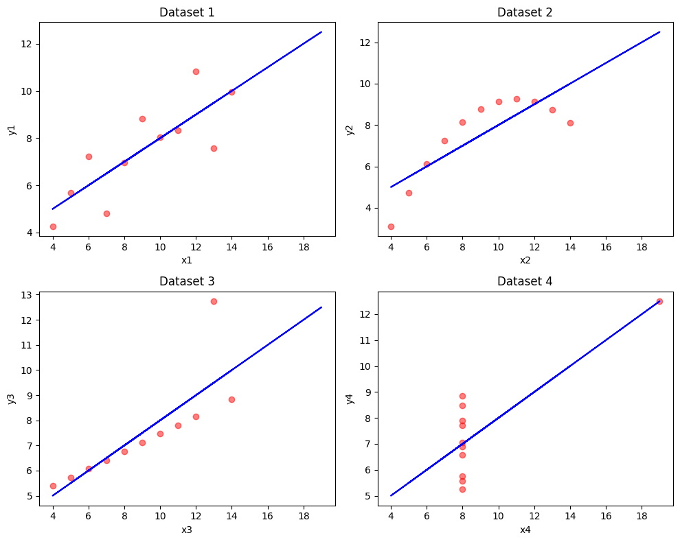
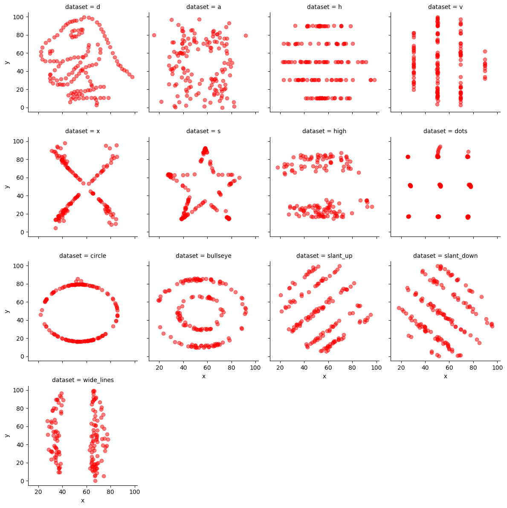

In this dataset:
- d denotes a dinosaur-shaped dataset
- s denotes a star-shaped dataset
| Property | Value | Accuracy |
|---|---|---|
| Mean of x | 9.00 | Exact |
| Sample variance of x | 10.23 | Approximate (up to 2 places) |
| Mean of y | 7.50 | Approximate (up to 2 places) |
| Sample variance of y | 3.84 | Approximate (up to 2 places) |
| Correlation between x and y | 0.816 | Approximate (up to 3 places) |
| Linear regression line (y = a+bx) | y = 3.00 + 0.50x | Approximate (up to 2 places) |
| Coefficient of determination of the linear regression | 0.67 | Approximate (up to 2 places) |
Single plot similar to the one from Wikipedia.
| Property | Value | Accuracy |
|---|---|---|
| Mean of x | 54.266 | Approximate (up to 3 places) |
| Mean of y | 47.835 | Approximate (up to 3 places) |
| SD of x | 16.713 | Approximate (up to 3 places) |
| SD of y | 26.848 | Approximate (up to 3 places) |
| Corr | -0.066 | Approximate (up to 3 places) |
Separate subplots for each dataset.
In this dataset: